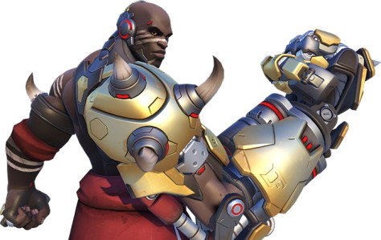
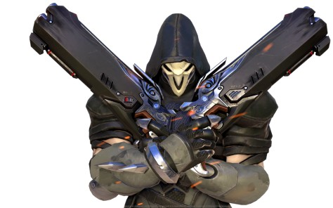
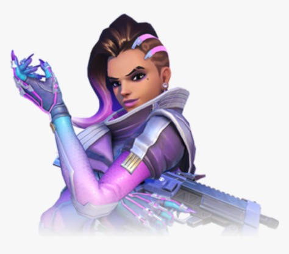
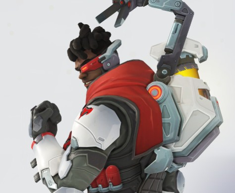

Historia
Talon fue establecido después de la caída de Overwatch. En ese tiempo, eran más fuertes, poderosos y audaces. Los miembros de Talon visten una armadura corporal negra completa con cascos y mascaras anti-balas oscuras. Sin embargo, estos soldados parecen ser los más simples; los comandos de Talon tienen suficiente talento tecnológico y científico para crear y modificar genéticamente soldados para operaciones más letales, como Widowmaker.
Talon parece estar conectado estrechamente con Blackwatch. McCree, un antiguo miembro de la organización Blackwatch, notó que Talon operaba con las tácticas de Blackwatch durante el intento del robo a un hipertren, y al menos uno de los miembros del pelotón de ataque lo reconoció, aumentando las implicaciones sobre las 2 organizaciones.
En el momento, poco se sabía sobre las operaciones y objetivos de Talon o las razones detrás de sus actos; sin embargo, sus métodos son innegablemente anti heroes. Ellos son excepcionalmente implacables y perfectamente capaces de matar a civiles y otros no combatientes simplemente por esconder sus huellas. Las actividades recientes sugieren de que tienen interés de volver a originar el conflicto entre Ómnicos y humanos.
Miembros
Doomfist

Las piezas cibernéticas de Doomfist lo vuelven un poderoso luchador de vanguardia con alta movilidad. Además de causar daño a distancia con su Cañón de mano, Doomfist puede golpear el suelo, lanzar enemigos por los aires y derribarlos, o cargar hacia la batalla con su Puño cohete. Al enfrentarse a un grupo muy cerrado, Doomfist salta fuera del rango visual, para después desplomarse hacia el suelo con un espectacular Golpe de meteoro.
Widowmaker

Widowmaker se equipa con lo que necesite para eliminar a sus blancos, lo que incluye minas que emiten gas venenoso, un visor que le concede a su escuadrón Infravisión y un poderoso rifle de francotirador que dispara en modo automático.
Reaper

Debido a los experimentos llevados a cabo por la doctora Moira O'Deorain, las células de Reaper se descomponen y regeneran simultáneamente a una velocidad hiperacelerada. Incluso después de la destrucción completa de su cuerpo, se ha observado que Reaper conserva algún tipo de forma como una niebla negra, aparentemente capaz de recuperar su forma física en un momento adecuado. Ha descrito su condición como una forma de "agonía constante", aunque solo a través de los experimentos de O'Deorain puede mantenerse con vida.
Sombra

El sigilo y los ataques debilitadores convierten a Sombra en una poderosa infiltradora. Puede alterar a sus enemigos para conseguir eliminarlos más fácilmente, y su PEM le otorga ventaja cuando se tiene que enfrentar a varios enemigos a la vez. La facultad de Sombra para translocarse y camuflarse hacen de ella un objetivo muy escurridizo.
Moira

En partes iguales, brillante y controvertida, la científica Moira O'Deorain está a la vanguardia de la ingeniería genética, buscando una manera de reescribir los pilares fundamentales de la vida. Aunque O'Deorain hará todo lo posible para lograr avances científicos, su trabajo aún es desconocido para la mayor parte del mundo. Pero ahora que se ha liberado de todas las limitaciones, es solo cuestión de tiempo antes de que todo cambie.
Baptiste

Un médico de combate de élite y ex agente de Talon, Baptiste ahora usa sus habilidades para ayudar a aquellos cuyas vidas han sido afectadas por la guerra. Posee un deseo innato de ayudar a la gente. Baptiste maneja una variedad de dispositivos experimentales y armamento para mantener vivos a los aliados y eliminar las amenazas en condiciones feroces. Un médico de combate endurecido por la batalla, es tan capaz de salvar vidas como de eliminar al enemigo. Él sana donde puede, y lucha cuando debe. Sabe que no puede deshacer su pasado, pero hacer una diferencia es ahora lo que importa.
Sigma

La vida del famoso astrofísico Siebren de Kuiper cambió para siempre cuando un experimento fallido le otorgó la capacidad de controlar la gravedad, pero también le destrozó la mente. Ahora, le cuesta ver su relación con la realidad y no es consciente de que Talon lo manipula para sus propios fines.